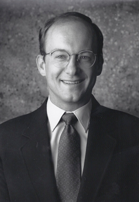

Our team of smart, driven people care a lot more about getting it done, and the industry relationships we build. Secure Technology and Communication Consultants LLC personnel truly become a valuable extension of our clients’ teams. As a result, our people are a primary reason our clients would recommend us to others
Our “one team” attitude breaks down silos and helps us engage equally effectively from the c-suite to the front line. Our collaborative working style emphasizes teamwork, trust, and tolerance for diverging opinions. People tell us we are down-to-earth, approachable and fun.
We have a passion for our clients’ actual results and a pragmatic drive for action that never stops. We rally clients, co-travelers, & industry partners with infectious energy, to make a difference.
We work hard, we enjoy what we do and we laugh a lot…most often at ourselves.
We look forward to becoming part of your team.

President
Vice President